How to play
遊び方説明
holorhysmを開く
ver0.5.0
- 対応ブラウザでhttps://holorhysm.pages.dev/を開きます。
- 対応ブラウザについてはSystem Requirementsをご確認ください。
- 必要に応じて、PWAとしてインストールすることができます。
ver0.4.5
- https://holorhysm.axtech.dev/play/を開きます。
- 必要に応じて、PWAとしてインストールすることができます。
判定を合わせる
まずは譜面の見た目を合わせましょう
- 適当な譜面(NormalでOK)をプレイ開始します
- ノーツと判定線が重なる瞬間をガン見して、ノーツが降ってくるのが音楽に対して早いか遅いか確認します
- ノーツが降ってくるタイミングが……
- 遅いと感じたら、設定の「楽曲オフセット(秒)」をマイナス方向にずらします
- 早いと感じたら、設定の「楽曲オフセット(秒)」をプラス方向にずらします
そのあとに、判定のタイミングを合わせましょう
- 見た目を合わせた状態で、自分が思う正確なタイミングでノーツを叩いて、判定表示の色を確認します
- 判定表示の色が……
- 暖色の場合、設定の「判定オフセット(秒)」をマイナス方向にずらします
- 寒色の場合、設定の「判定オフセット(秒)」をプラス方向にずらします
遊ぶ楽曲を選択する
ホーム画面から「セッション」を選択します
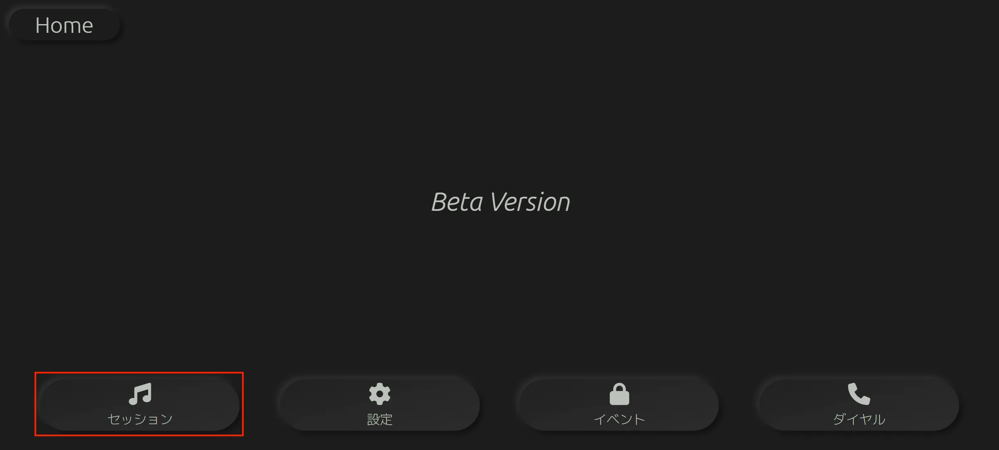遊びたい楽曲の「≫」ボタンを押します
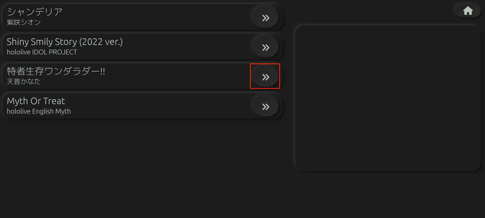
- 遊びたい楽曲がない……？ → Q. 遊びたい楽曲が楽曲選択画面に表示されません。
遊びたい難易度が書かれたボタンを押します
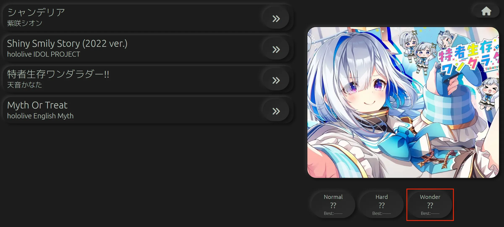イベントで楽曲を解禁する
一部の楽曲は、「イベント」を進めることでプレイ可能になります。
イベントを選択する
ホーム画面から「イベント」を押します
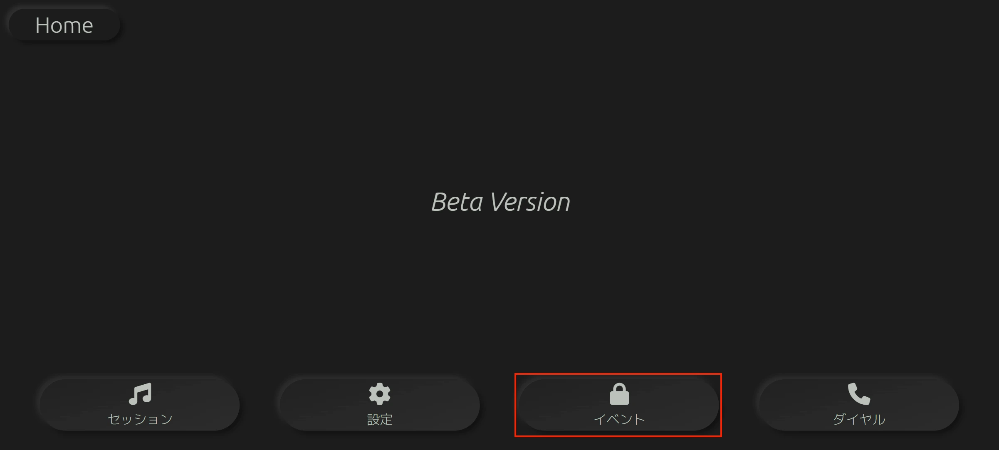選択するイベントのボタンを押します
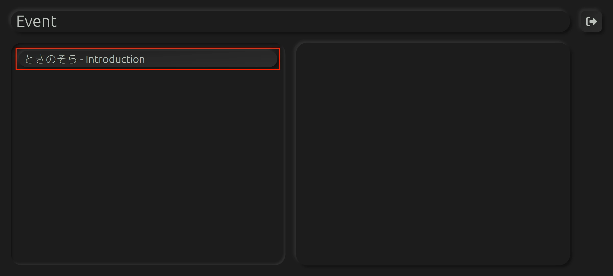「このイベントを選択する」ボタンを押します
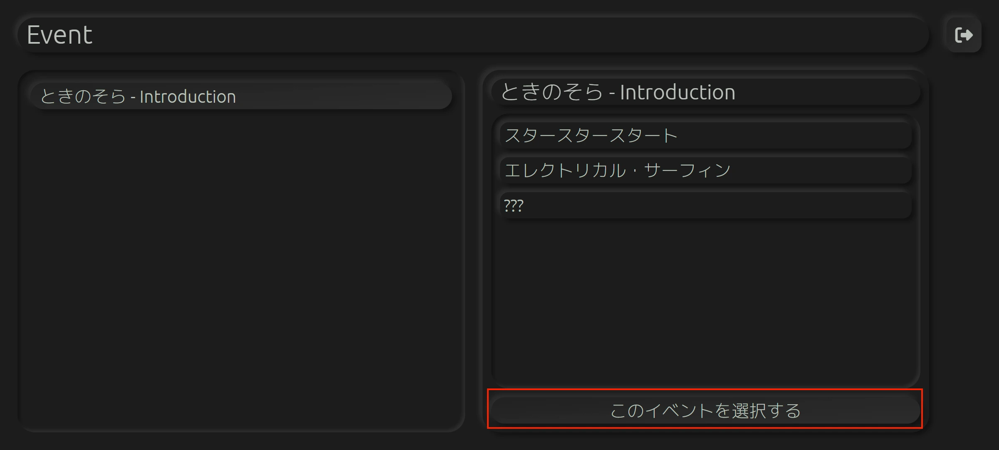イベントを進める
基本的に、課題曲で一定以上のスコアを獲得すると次の課題曲が解禁されます。
セッション(プレイ)画面
初期解禁譜面「チュートリアル」をプレイしながら確認することもできます。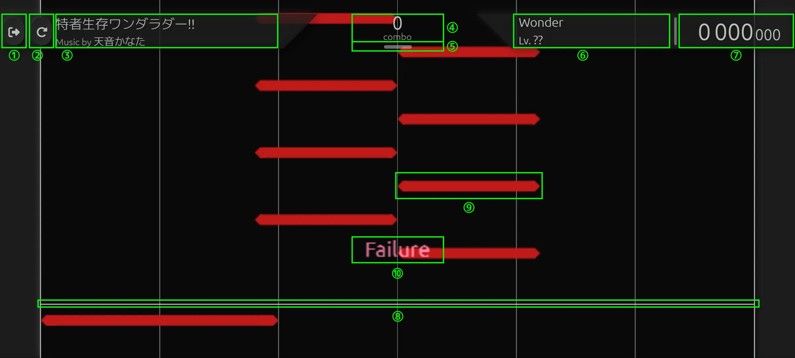
- リタイアボタン : このボタンを押すとセッションを中止することができます
- リトライボタン : このボタンを押すと、はじめからセッションをやり直します
- 楽曲情報 : 楽曲名などが表示されます
- コンボ数 : 現在何コンボ繋いでいるかを表示します
- FC/PS継続表示 : PS・FC継続中に特別な表示に変わります
- 譜面情報 : 譜面の難易度やレベルなどが表示されます
- スコア : 現在のスコアが表示されます
- 判定ライン : ノーツが降ってくるラインです。このラインに合わせてノーツを処理します
- ノーツ : 判定ラインと重なるタイミングで処理します
- 判定表示 : ノーツを処理した結果が表示されます
ノーツ(音符)の種類
初期解禁譜面「チュートリアル」をプレイしながら確認することもできます。
holorhysmには全部で7種類のノーツと1種類のオブジェクトがあります。
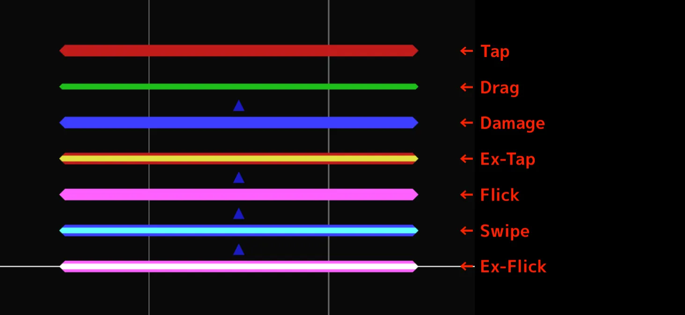
- Tap : タイミングよくタップします
- Ex-Tap : Tapと同じですが、得点が2倍です
- Drag : タイミングに合わせて押したままにします
- Swipe : タイミングよく擦ります
- Damage : 判定線と重なるタイミングで触らないでおきます
- Flick : タイミングよく触ってフリックします
- Ex-Flick : Flickと同じですが、得点が1.5倍です
覚えるのが大変であれば、「基本叩く」「細いのはなぞる」「矢印付きは弾く」だけ覚えておけば基本的に対応できます。
判定
初期解禁譜面「チュートリアル」をプレイしながら確認することもできます。
holorhysmには全部で4種類の判定があります。
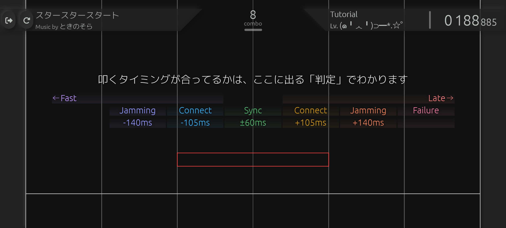
- Sync : 完璧なタイミングでノーツを処理できたときにこの判定になります
- 譜面内のすべてのノーツをSync判定で処理した場合、記録「Perfect Synchronized」が得られます
- Connect : 少しズレたタイミングでノーツを処理できたときにこの判定になります
- 譜面内のすべてのノーツをConnect判定以上で処理した場合、記録「Full Connection」が得られます
- Jamming : 大きくズレたタイミングでノーツを処理できたときにこの判定になります
- Failure : ノーツを処理できなかったときにこの判定になります
正しいタイミングで押しているのにも関わらずConnect以下の判定が出る場合は、判定調整を行いましょう。
リザルト・スコア
セッションを終えると、リザルトが表示されます
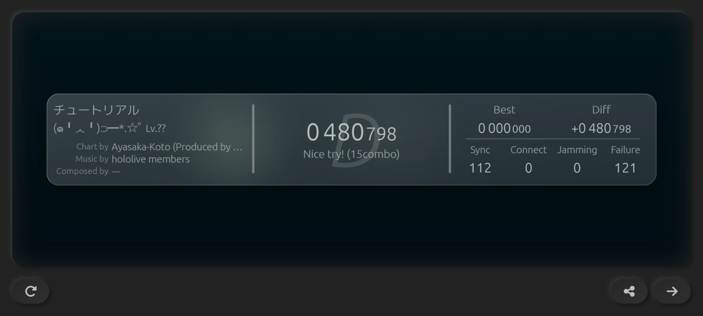
- スコア : このセッションの総合得点です。満点はおよそ100万点です。
- ランク : スコアに応じてランクが付与されます。
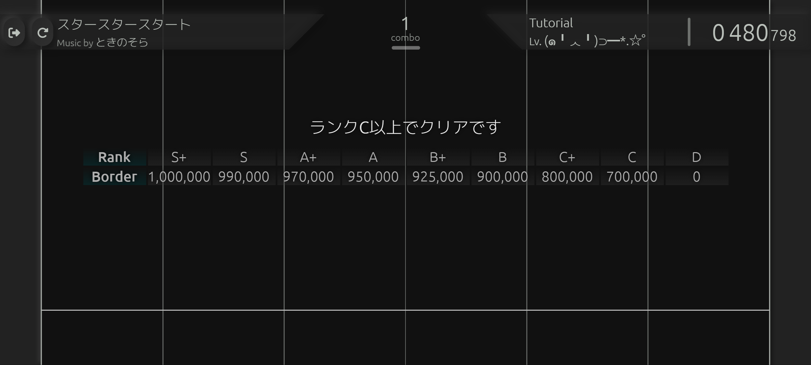